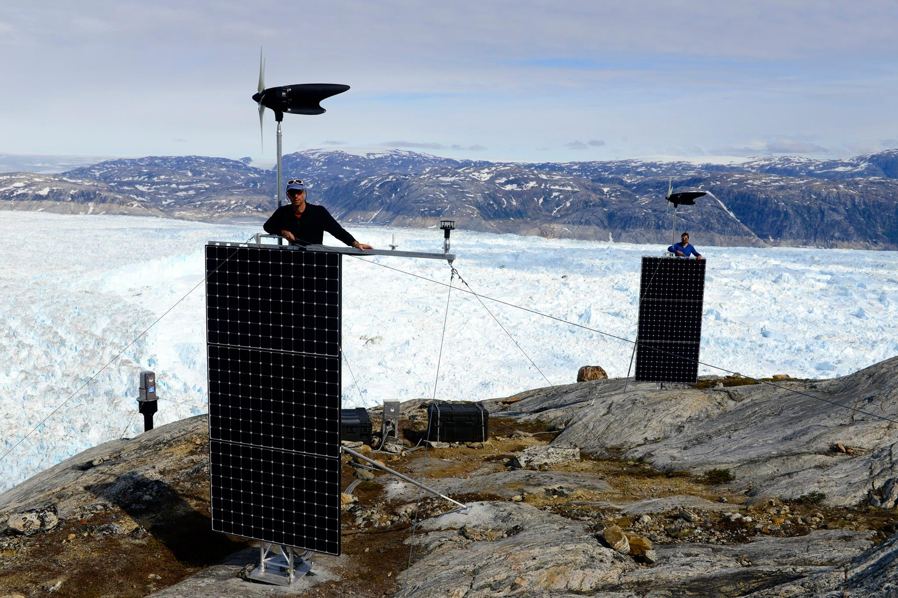

LiDAR and Snow
GEOG 5321
Pete Gadomski <pete.gadomski@gmail.com>


Today
- LiDAR fundamentals
- Case studies of LiDAR and snow:
- Airborne Snow Observatory: measuring snow depth with airborne LiDAR
- Arapahoe Basin/CDOT: qualitative avalanche risk assessment and mitigation with terrestrial LiDAR
- Helheim Glacier: remote change detection with autonomous LiDAR
- Brief discussion of past and ongoing research in LiDAR and snow/ice
Manual snow depth surveys are imperfect

Erickson, T. A., Williams, M. W., & Winstral, A. (2005). Persistence of topographic controls on the spatial distribution of snow in rugged mountain terrain, Colorado, United States. Water Resources Research, 41(4), 1–17. http://doi.org/10.1029/2003WR002973
Remote sensing options
- Gamma ray attenuation: only gets SWE
- Microwaves/Radar: snowpack penetration that varies with snow moisture can confound surface detection
- Stereo imagery: can be used for snow depths, but the featureless snow surface often makes registration problematic
- LiDAR: little to no snowpack penetration (< 2cm) and high signal-to-noise makes it good for long-range snowpack measurements (with caveats)
LiDAR
Active remote sensing technique that uses visible or near-infrared laser energy to measure distances.
Time-of-flight

$$ d = c \frac {t} {2} $$
Moving laser beam
Terrestrial LiDAR
Airborne LiDAR
Requires GNSS/IMU to determine the position, rotation, and motion of the airborne platform.
Mobile LiDAR

UAS LiDAR
Reflectance of snow at common LiDAR wavelengths
Spectra from http://speclib.jpl.nasa.gov/
Snow depths from LiDAR

Data products
- Point clouds
- Digital Elevation Models (DEMs) and other raster imagery
Airborne Snow Observatory
Regular flights in the Sierras and elsewhere to measure snow depths and estimate SWE; platform includes LiDAR scanner and hyperspectral camera.


Uncompahgre Basin, Southwest Colorado

Uncompahgre Basin, snow depth
Uncompahgre Basin, SWE
Arapahoe Basin/CDOT Avalanche Surveys
Repeat observations of avalanche-prone areas, capturing what we call "the triplet":
- Pre-storm
- Post-storm, pre-control
- Post-control
Measuring avalanche slide path properties

$$ \alpha \approx 35° $$
Avalanche infrastructure planning
Remote Glacier Monitoring
Helheim Glacier, Greenland
WGS 84 / Arctic Polar Stereographic, data from http://www.naturalearthdata.com
Manned TLS surveys over several years
But manned surveys are expensive and moderately risky.
Automated LiDAR system installed Summer 2015
- Solar, wind, and methanol fuel cell power
- Satellite connectivity to transmit status and weather data
- Twice-yearly revisits to pick up point clouds
Operating electronics in Greenland is hard
Calculating deformation of a point cloud is hard
Algorithms such as Iterative Closest Point, Partical Imaging Velocemitry, and Coherent Point Drift are used to automatically calculate 2- or 3-D change vectors.
Past and ongoing snow-and-LiDAR research
Spatial distribution of snow
Deems et al. 2006
Hydrological model tuning
PRMS = Precipitation Runoff Modeling System (PRMS)
Rigorous error propagation
Change detection
- Automated and standardized snow-depth calculation and storage
- Slope-normal snow depths
- Three-dimensional change detection (ongoing)
Bibliography
- McGurk, B. J., & Painter, T. H. (2013). Airborne Snow Observatory: measuring basin-wide seasonal snowpack with LiDAR and an imaging spectrometer to improve runoff forecasting and reservoir operation (Invited). American Geophysical Union. Retrieved from http://adsabs.harvard.edu/abs/2013AGUFM.C51D..01M
- Finnegan, D. C., Lewinter, A. L., Hamilton, G. S., Gadomski, P. J., & Stearns, L. A. (2015). Long-term Autonomous Tidewater Glacier Monitoring Using a Long-Range Terrestrial LiDAR Scanner; Helheim Glacier, Southeast Greenland.
- Gadomski, P. J., Deems, J. S., Glennie, C. L., Hartzell, P. J., Butler, H., & Finnegan, D. C. (2015). Calculating LiDAR Point Cloud Uncertainty and Propagating Uncertainty to Snow-Water Equivalent Data Products.
- Deems, J. S., P. J. Gadomski, D. Vellone, R. Evanczyk, A. L. LeWinter, K. W. Birkeland, and D. C. Finnegan. 2015. Mapping start zone snow depth with a ground-based lidar to assist avalanche control and forecasting. Cold Regions Science and Technology 120: 197-204, doi:10.1015/j.coldregions.2015.09.002
- Deems, J. S., S. R. Fassnacht, and K. J. Elder. 2006. Fractal distribution of snow depth from LiDAR data. Journal of Hydrometeorology 7(2): 285-297, doi:10.1175/JHM487.1
Thanks!
pete.gadomski@gmail.com https://github.com/gadomski